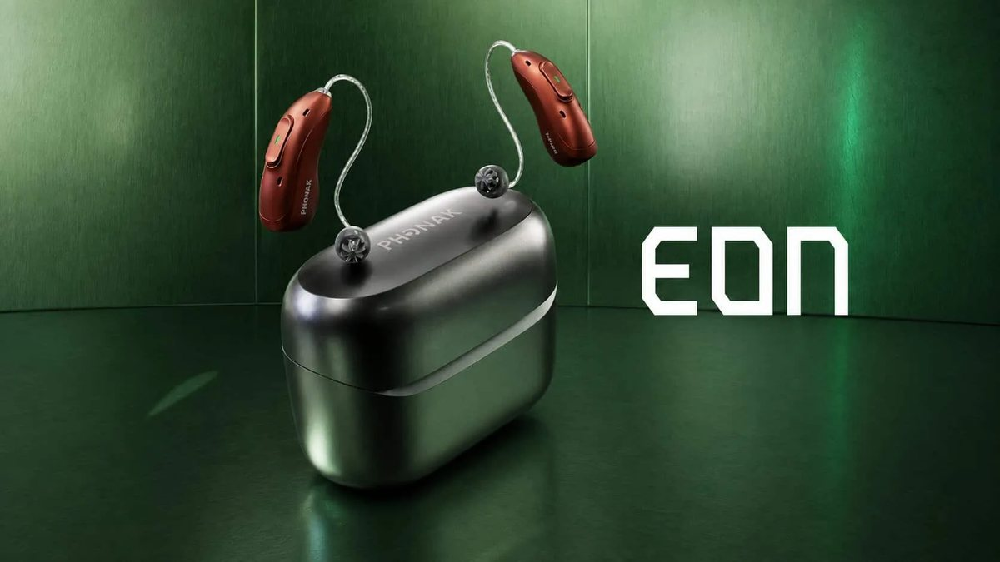
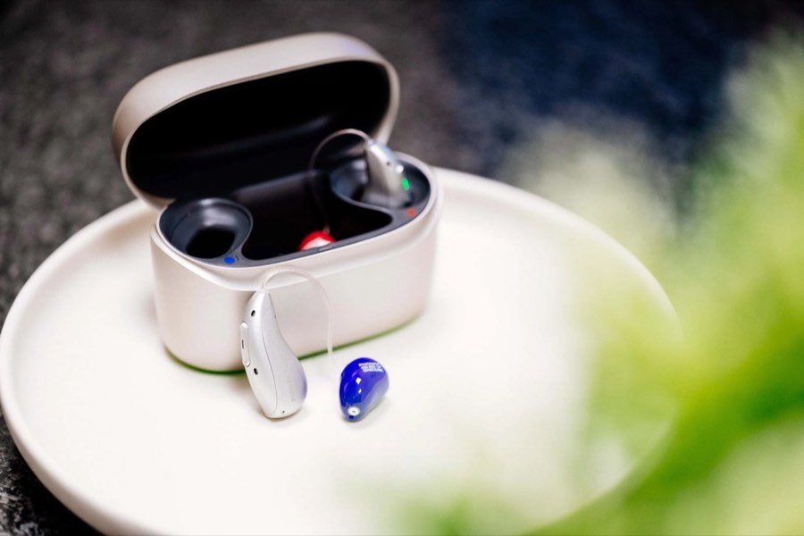

Phonak EON · Rösrath, nähe Köln
Phonak EON Hörgeräte in Rösrath
Die neuen Phonak EON Hörgeräte verbinden KI-gestützte Klangverarbeitung mit moderner Konnektivität. Bei Hoffnungsohr lernen Sie sie kennen: unabhängige Beratung, individuelle Anpassung und kostenloses Probetragen — vom inhabergeführten Meisterbetrieb in Rösrath-Hoffnungsthal.

Das Phonak EON — die wichtigsten Merkmale
Laut Hersteller: moderne Hörtechnologie für den Alltag — von der Unterhaltung am Tisch bis zum Fernsehabend.
Automatische Einstellung
Die KI-Technologie passt das Hörgerät laut Hersteller automatisch an Ihre jeweilige Hörumgebung an.
Klarer, natürlicher Klang
Ziel der Klangverarbeitung ist ein klarer, natürlicher Höreindruck im Alltag.
Smartphone, TV & Auracast™
Verbindung mit Smartphone und Fernseher sowie Unterstützung von Auracast™ für Übertragungen an öffentlichen Orten.
Wiederaufladbar & kompakt
Komfortabel zu tragen und wiederaufladbar — ohne Batteriewechsel im Alltag.
Phonak Audéo EON Sphere
Das Plus für anspruchsvolle Gespräche in lauten Umgebungen
Das Audéo EON Sphere besitzt laut Hersteller einen zusätzlichen KI-Chip. Er soll in Echtzeit Sprache gezielt von störenden Umgebungsgeräuschen unterscheiden — gedacht für lebhafte Situationen wie Restaurantbesuch, Familienfeier oder Vereinsabend.
Ob dieses Modell für Sie die richtige Wahl ist, hängt von Ihrem Hörverlust und Ihrem Alltag ab. Das klären wir im Hörtest und beim Probetragen — ehrlich und ohne Verkaufsdruck.
Phonak EON kennenlernen
Warum Phonak EON bei Hoffnungsohr?
Neue Technik braucht gute Anpassung. Das ist unser Handwerk.
Inhabergeführt — Johannes Penzel persönlich
Johannes Penzel kennt Sie, Ihre Hörgeschichte und Ihren Alltag — von der ersten Beratung bis zur langfristigen Nachsorge.
Hoffnungsohr-Target — Anpassung mit Messung im Ohr
Wir kalibrieren Ihr Hörgerät auf Ihre persönliche Hörumgebung — mit unserer Anpassungsmethode, auch bei modernen KI-Hörgeräten.
Markenunabhängig beraten
Wir sind nicht an einen Hersteller gebunden. Das Phonak EON ist für uns eine Option unter mehreren — empfohlen wird, was zu Ihnen passt.
Rösrath — 20 Minuten von Köln
Kurze Wege statt langer Anfahrt: Hoffnungsthal liegt direkt an der Kölner Stadtgrenze, mit kostenlosen Parkplätzen am Haus.
In 3 Schritten zu Ihrem Phonak EON
Einfach. Persönlich. Unverbindlich.
Kostenloser Hörtest
Wir messen Ihr Hörvermögen und sprechen über Ihren Alltag und Ihre Hörsituationen — kostenlos und ohne Voranmeldung.
Kostenlos & unverbindlichPhonak EON kennenlernen
Wir zeigen Ihnen die passenden EON-Modelle, erklären Technik, Funktionen und Kosten verständlich und transparent.
Inhabergeführt & individuell21 Tage Probetragen
Tragen Sie Ihr Hörgerät 21 Tage lang in Ihrem echten Alltag. Sind Sie nicht überzeugt, geben Sie es einfach zurück — ohne Kosten.
ZufriedenheitsgarantieWas kostet ein Phonak EON — und was zahlt die Kasse?
Gesetzlich Versicherte mit ärztlich bestätigtem Hörverlust haben Anspruch auf eine Kassenversorgung — bis auf die gesetzliche Zuzahlung ab 0 €. Für ein modernes Hörsystem mit höherwertiger Ausstattung kann eine Aufzahlung anfallen. Den genauen Preis nennen wir Ihnen vorab, transparent und schriftlich. Wir rechnen direkt mit Ihrer Krankenkasse ab; Privatversicherte erhalten eine detaillierte Rechnung zur Einreichung.
Häufige Fragen zum Phonak EON
Was ist das Phonak EON?
Was kostet ein Phonak EON?
Kann ich das Phonak EON ausprobieren?
Wo bekomme ich das Phonak EON in Rösrath?
Lässt sich das Phonak EON mit Smartphone und Fernseher verbinden?
Sind Sie an die Marke Phonak gebunden?
Für wen ist das Phonak EON geeignet?
Produktmerkmale nach Herstellerangaben; der Funktionsumfang kann je nach Modell und Technologiestufe variieren. Phonak, Audéo und EON sind Marken der jeweiligen Inhaber, Auracast™ ist eine Marke der Bluetooth SIG, Inc. Produktabbildung: Phonak. Hoffnungsohr ist ein unabhängiger Fachbetrieb.